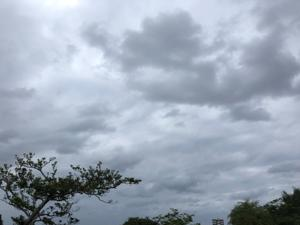
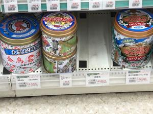

うるがいの話 ある日
最新: かとりせんこう【うるがいの話 ある日】とは 一日だけのプログです
『うるがいの話』の最新一日だけのプログで、通信料が少なく経済的だ。カニの画像をクリックすると全ての日付が載る『うるがいの話』サイトを表示します
|
|
【うるがいの話】 うるがい(ｳﾙｶﾞｲ urugai)とは、『もずくがに』の名前でとても大きくなります。 |
|---|---|
|
|
【カミマヤーの話】 猫のことを方言でマヤーといいます。カミマヤー（kamimayaa）とは、神の猫のことです。 |
|
【たながぁの音楽】 たながぁ（ﾀﾅｶﾞｰ tanagaa）とは手長えびのことで、何種類かあり大きいのは車 エビぐらいになります。 |

|
【ぶながぁの話】 ぶながぁ(ﾌﾞﾅｶﾞｰ bunagaa)とは、赤い髪の毛、赤い身体、そして身長は１ｍ２０ｃｍ ぐらい、川の蟹を食べているの目撃された。場所は沖縄県国頭郡大宜味村のと ある村僕の隣近所に住んでいる爺さんから、聞いた話です。 |
|
|
【ギーマの話】 ギーマ(giima)とは、山原の里山に咲くスズランに似た、 花を付けます。実は食べられます、 気が付くと口の周りが紫になっています。 |
2022年10月12日 (水）かとりせんこう
17:42
 
家の周りには蚊が多く、玄関に普通サイズの蚊取り線香を置いていたが、昼過
ぎには煙が無くなっていた。いつの間にか、大型サイズの蚊取り線香を使うよ
うになった。が、線香が完全に燃焼しないことが度々あり、かつ、蚊取り線香
皿のヤニが手につき、閉口していた。ところがである、この前何気なく蚊取り
線香をとり、レジで値段が高い！と気付いた。買ったのは、金鳥の蚊取り線香
で１、５５５円だった。使うと、さすが値段だけの事はあると感心する、では
いままで使っていたのは、フマキラーの製品６６０円のものだった。安くても
もう戻れない。
国民健康で初めて、特定検診を受ける。なんと、オプションをなしで基本的な
検査項目だけ（問診、身長体重、診察、血液検査、大腸がん検査は容器を渡さ
れた）でほぼ１時間で済んだ。検査結果は１２月の定期通院にまとめて受ける
ことにした。
１７時３７分 ビットコインの総資産 ￥８、１０７↑